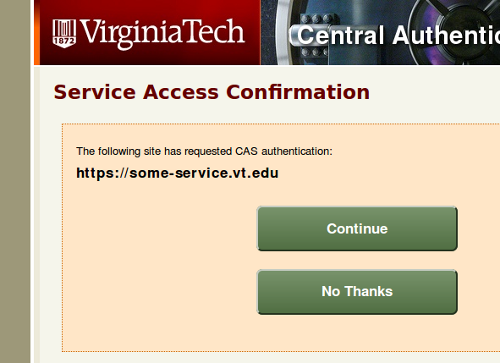

About CAS
The Virginia Tech Central Authentication Service, CAS, is a single sign-on service that provides access to many secure VT Web sites and external sites that use Shibboleth.
The CAS wiki provides policy and technical information for integrating VT applications with CAS.
CAS Features
Warn
The warn checkbox on the login form provides additional information about a service that requests secure access via CAS. If the warn checkbox is selected, a screen like the following is displayed when a user attempts to access a CAS-enabled service.
PDC Login
CAS supports authentication via an SSL (X.509) client certificate issued by the Virginia Tech User CA, which is commonly referred to as a Personal Digial Certificate (PDC). PDC login is more secure than standard username password login for the following reasons:
- Certificates are more resistant to theft.
- Certificates are much more resistant to brute force attacks (analogous to password guessing).
At the present time, the only method of distributing PDCs is via the Aladdin eToken USB fob.
Single Sign-Out
When you end your CAS single sign-on session by logging out of CAS, CAS attempts to log you out of all the services that you visited during your session. While this works well under normal circumstances, there are a number of fundamental limitations with this feature. For that reason it is strongly recommended that you close your browser after logging out of CAS, particularly in cases where additional security is merited, such as a shared computer.
Login Problems
Forgotten Username/Password
Try our guided help system:Other Login Problems
Search the VT Knowledge Base for answers or call 4Help at 540-231-4357.
InCommon Assurance
Virginia Tech is certified to assert InCommon Bronze and Silver qualifiers for PDC users who need to access federated services requiring higher levels of trust according to the InCommon Assurance Program. All CAS single sign-on sessions started with PDC authentication will convey these qualifiers to federated services via the Virginia Tech Shibboleth IdP.
Terms of Use
Acceptable Use Policy
Use of CAS is covered by the University Acceptable Use Policy.
In practical terms CAS is a University authentication system that shall be used to access services to which you are rightly entitled using credentials belonging to you. Any other use is prohibited.
Privacy Policy
Recorded Information
CAS records client IP addresses, user names, and accessed services in order to provide an audit trail in support of fraud, abuse, and other security investigations conducted by authorized University personnel. Recorded data may also be used for diagnostic and troubleshooting purposes. Recorded data (logs) are preserved for at least 30 days.
Disclosure of Personal Information
The data recorded by CAS is not disclosed to third parties unless under force of law.
Links
In a number of instances, CAS provides links to other Virginia Tech Web sites in order to support the primary purposes of the application. While the privacy practices of all University services are similar, the details may vary with the site. Consult the privacy statement on each site for further information.
The only links to external sites appear in the page footer. Virginia Tech is not responsible for the privacy practices or the content of such web sites.
Cookies
CAS uses a session cookie to track authenticated state exclusively if cookies are supported on the client browser. CAS supports a cookie-less mode that provides a degraded user experience.
Security Practices
CAS is deployed and managed according to best practices with regard to security and availability. In particular, sensitive information is transmitted to CAS using strong encryption. Additionally, CAS does not store sensitive information such as user passwords.